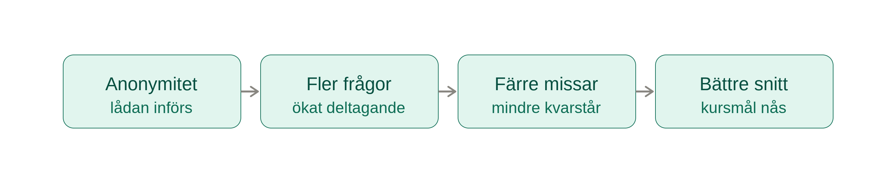
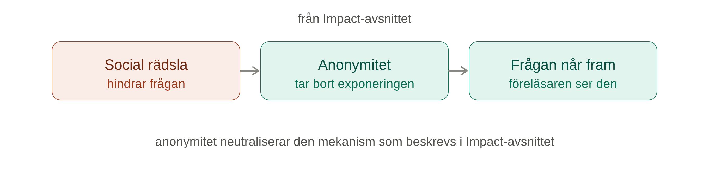

Vi tror att en anonym digital frågelåda under storföreläsningar leder till fler klargörande frågor, färre kvarstående missuppfattningar och bättre resultat på kursens kunskapskontroller än en föreläsning utan verktyget.
Vår hypotes

Det förväntade resultatet
Vi förväntar oss tre resultat som går att undersöka:
- Fler frågor ställs. När anonymiteten minskar risken att känna sig utpekad tror vi att fler studenter använder möjligheten att fråga.
- Frågorna speglar fler studenters behov. Fler anonyma bidrag kan synliggöra missuppfattningar hos en större del av gruppen än de som vanligtvis räcker upp handen.
- Kunskapsresultaten förbättras. När fler frågor besvaras kan missuppfattningar rättas till innan de påverkar senare delar av kursen. Mayer et al. (2009) kopplar integrerade digitala frågeverktyg till bättre resultat (Mayer et al., 2009).
Kopplingen till impact

Rädslan för att verka okunnig kan hänga samman med impostor syndrome och förstärkas av offentlig exponering och social jämförelse (Álvarez Ayala et al., 2026). Vår hypotes är att anonymitet minskar den sociala exponeringen och gör det lättare för studenter att fråga. Då kan de visa vad de faktiskt behöver hjälp med, i stället för att låta en rädsla för bedömning hålla frågorna tillbaka.
Effekten förutsätter också att verktyget är enkelt att använda mitt under föreläsningen. Mayer et al. (2009) beskriver att en pappersbaserad lösning kunde störa undervisningens flöde, medan ett integrerat digitalt verktyg gav bättre resultat (Mayer et al., 2009). Därför handlar hypotesen både om anonymitet och om låg friktion.